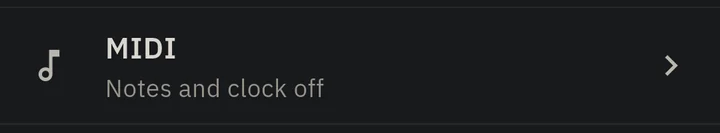
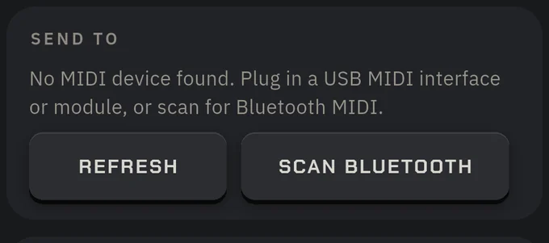
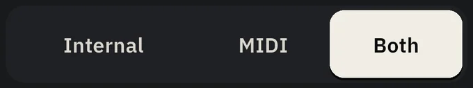
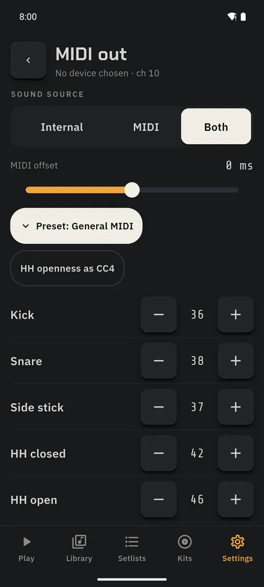
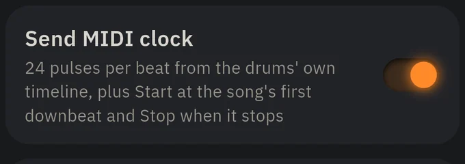
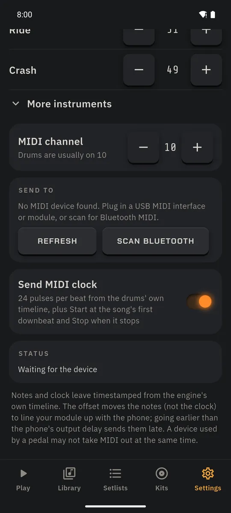
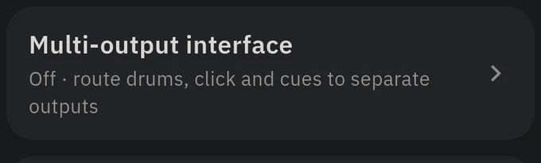
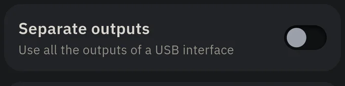
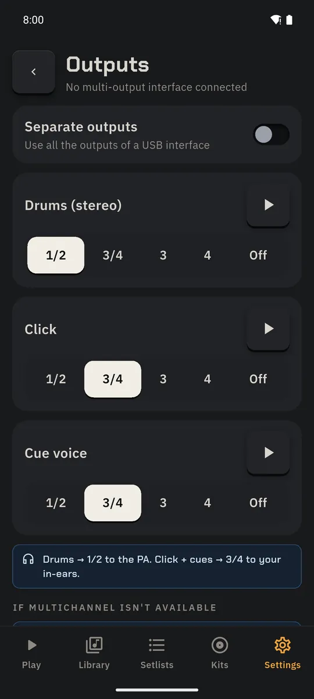

Gear
MIDI out and multi-output interfaces, for players with more boxes than friends.
MIDI notes out
Play an e-drum module, a synth or a plugin from DrumFill2's grooves.
- Settings → MIDI.

- Under Send to, plug in a USB MIDI interface and tap Refresh, or Scan Bluetooth for a Bluetooth MIDI device, then pick it.

- Sound source: Internal, MIDI (the phone's kit goes quiet) or Both.

- Adjust MIDI offset until the module lines up with the phone. The note map (General MIDI by default, channel 10) can be changed per instrument; hi-hat openness can go out as CC4.

MIDI clock
Loopers, delays and drum machines follow DrumFill2's tempo.
- In Settings → MIDI, pick the device and switch on Send MIDI clock.

- Clock follows the count-in, tempo changes and ritards; Start goes out on the song's first downbeat and Stop on STOP. The status line reports how it's going.

Multi-output audio interfaces
Drums to the PA, click and count-ins to your in-ears.
- Connect a USB audio interface with more than two outputs. Settings → Audio & output → Multi-output interface.

- Switch on Separate outputs.

- Route Drums, Click and Cue voice to 1/2, 3/4, 3, 4 or Off. ▶ plays a test tone on each.
- If the phone only opens two channels on your interface, the page says so and DrumFill2 falls back to split mode instead of going silent.
Support varies by phone; four-channel streams can have more latency than stereo.
